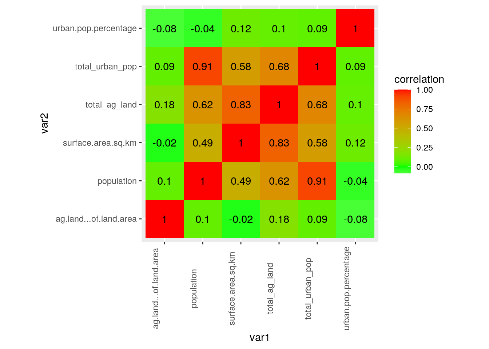
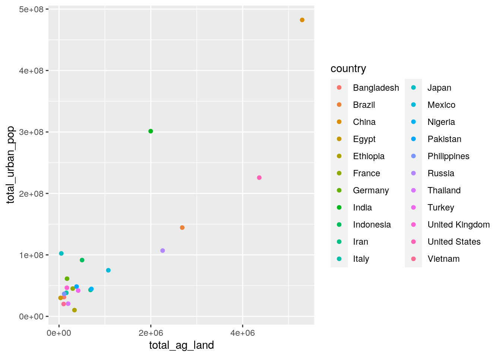
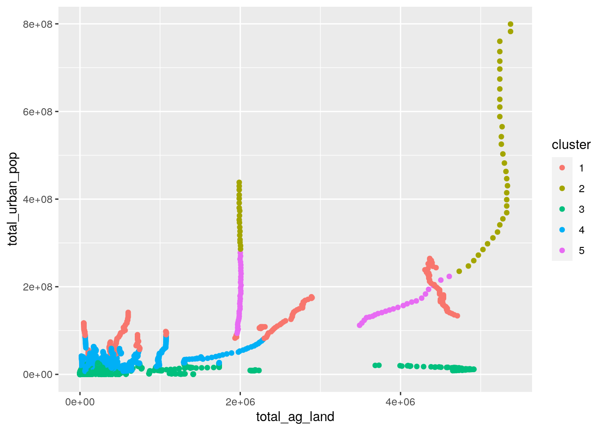

I obtained my datasets from gapminder.org and they obtained these datasets from the data world bank as cited on their webpage. These datasets all contain at least from the years 1961-2016, country and year are the variables that are constant through the four separate datasets. The other variables are percentage of agricultural land, population, percentage of urban population, and surface area in square kilometers. I want to explore if there is a a relationship between urban population/general population and agricultural land over the course of decades. Also I want to explore the relationship between population size and agricultural land across countries.
library(dplyr)
library(ggplot2)
library(tidyverse)
library(tidyr)
population_total <- read_csv("population_total.csv")
urban_population_percent_of_total <- read_csv("urban_population_percent_of_total.csv")
surface_area_sq_km <- read_csv("surface_area_sq_km.csv")
agricultural_land_percent_of_land_area <- read_csv("agricultural_land_percent_of_land_area.csv")
population1 <- population_total %>% select(-c(2:162, 219:302))
pop <- population1 %>% pivot_longer(cols = c(2:57), names_to = "year",
values_to = "population")
sa_sq_km <- surface_area_sq_km %>% select(-c(58:59)) %>% pivot_longer(cols = c(2:57),
names_to = "year", values_to = "surface area sq km")
ag_land_area <- agricultural_land_percent_of_land_area %>% pivot_longer(cols = c(2:57),
names_to = "year", values_to = "ag land % of land area")
urban_pop <- urban_population_percent_of_total %>% select(-c(2,
59:61)) %>% pivot_longer(cols = c(2:57), names_to = "year",
values_to = "urban pop percentage")
# Above I have deleted excess coulumns since some have more
# than the targeted years of 1961-2016. After deleting these
# columns I pivoted year into a variable making my datasets
# tidy and easy for R to process.fulldata1 <- pop %>% full_join(ag_land_area, by = c("country",
"year"))
fulldata2 <- fulldata1 %>% full_join(urban_pop, by = c("country",
"year"))
fulldata <- fulldata2 %>% full_join(sa_sq_km, by = c("country",
"year"))
# I performed a full join muliple times for country and year
# variables so those would not be repeated in the new dataset
# so I could include the data from my datasets. I did a full
# join to include the NAs that come with city states and
# other countries that there is no data for.fulldata %>% mutate(total_urban_pop = `urban pop percentage` *
population) %>% mutate(total_ag_land = `surface area sq km` *
`ag land % of land area`) %>% filter(year == 2001)## # A tibble: 195 x 8
## country year population `ag land % of l… `urban pop perc… `surface area s…
## <chr> <chr> <dbl> <dbl> <dbl> <dbl>
## 1 Afghan… 2001 21600000 0.578 0.222 653000
## 2 Albania 2001 3130000 0.416 0.424 28800
## 3 Algeria 2001 31500000 0.168 0.607 2380000
## 4 Andorra 2001 67300 0.484 0.921 470
## 5 Angola 2001 16900000 0.46 0.513 1250000
## 6 Antigu… 2001 77200 0.205 0.317 440
## 7 Argent… 2001 37300000 0.47 0.893 2780000
## 8 Armenia 2001 3050000 0.466 0.644 29700
## 9 Austra… 2001 19200000 0.593 0.841 7740000
## 10 Austria 2001 8100000 0.353 0.599 83900
## # … with 185 more rows, and 2 more variables: total_urban_pop <dbl>,
## # total_ag_land <dbl>fulldata %>% mutate(total_urban_pop = `urban pop percentage` *
population) %>% mutate(total_ag_land = `surface area sq km` *
`ag land % of land area`) %>% filter(year == 1961)## # A tibble: 195 x 8
## country year population `ag land % of l… `urban pop perc… `surface area s…
## <chr> <chr> <dbl> <dbl> <dbl> <dbl>
## 1 Afghan… 1961 9170000 0.577 0.0868 653000
## 2 Albania 1961 1690000 0.45 0.309 28800
## 3 Algeria 1961 11300000 0.191 0.318 2380000
## 4 Andorra 1961 14400 0.553 0.61 470
## 5 Angola 1961 5530000 0.459 0.108 1250000
## 6 Antigu… 1961 55000 0.227 0.39 440
## 7 Argent… 1961 20800000 0.504 0.742 2780000
## 8 Armenia 1961 1940000 NA 0.521 29700
## 9 Austra… 1961 10400000 0.601 0.819 7740000
## 10 Austria 1961 7110000 0.431 0.648 83900
## # … with 185 more rows, and 2 more variables: total_urban_pop <dbl>,
## # total_ag_land <dbl>newvar <- c(fulldata %>% mutate(total_urban_pop = `urban pop percentage` *
population) %>% mutate(total_ag_land = `surface area sq km` *
`ag land % of land area`))newvar1 <- as.data.frame(newvar)
newvar1 %>% group_by(year) %>% summarise(mean(population))## # A tibble: 56 x 2
## year `mean(population)`
## <fct> <dbl>
## 1 1961 15761233.
## 2 1962 16055951.
## 3 1963 16363208.
## 4 1964 16680203.
## 5 1965 17017910.
## 6 1966 17363647.
## 7 1967 17727175.
## 8 1968 18098461.
## 9 1969 18469813.
## 10 1970 18858702.
## # … with 46 more rowsnewvar1 %>% group_by(country) %>% summarise(max(total_ag_land))## # A tibble: 195 x 2
## country `max(total_ag_land)`
## <fct> <dbl>
## 1 Afghanistan 380699
## 2 Albania 13075.
## 3 Algeria 454580
## 4 Andorra 260.
## 5 Angola 593750
## 6 Antigua and Barbuda 110
## 7 Argentina 1515100
## 8 Armenia NA
## 9 Australia 4914900
## 10 Austria 36161.
## # … with 185 more rowsnewvar1 %>% group_by(country) %>% summarise(sd(urban.pop.percentage))## # A tibble: 195 x 2
## country `sd(urban.pop.percentage)`
## <fct> <dbl>
## 1 Afghanistan 0.0519
## 2 Albania 0.0816
## 3 Algeria 0.116
## 4 Andorra 0.0865
## 5 Angola 0.179
## 6 Antigua and Barbuda 0.0374
## 7 Argentina 0.0525
## 8 Armenia 0.0393
## 9 Australia 0.00936
## 10 Austria 0.0303
## # … with 185 more rowsnewvar1 %>% group_by(country) %>% summarise(min(surface.area.sq.km))## # A tibble: 195 x 2
## country `min(surface.area.sq.km)`
## <fct> <dbl>
## 1 Afghanistan 653000
## 2 Albania 28800
## 3 Algeria 2380000
## 4 Andorra 470
## 5 Angola 1250000
## 6 Antigua and Barbuda 440
## 7 Argentina 2780000
## 8 Armenia 29700
## 9 Australia 7740000
## 10 Austria 83900
## # … with 185 more rowsnewvar1 %>% summarise(median(population))## median(population)
## 1 4960000newvar1 %>% group_by(year) %>% summarise(mean(population))## # A tibble: 56 x 2
## year `mean(population)`
## <fct> <dbl>
## 1 1961 15761233.
## 2 1962 16055951.
## 3 1963 16363208.
## 4 1964 16680203.
## 5 1965 17017910.
## 6 1966 17363647.
## 7 1967 17727175.
## 8 1968 18098461.
## 9 1969 18469813.
## 10 1970 18858702.
## # … with 46 more rowsnewvar1 %>% select(country, year, total_urban_pop, total_ag_land)## country year total_urban_pop total_ag_land
## 1 Afghanistan 1961 795956 376781
## 2 Afghanistan 1962 839630 377434
## 3 Afghanistan 1963 885312 378087
## 4 Afghanistan 1964 934066 378740
## 5 Afghanistan 1965 986040 378740
## 6 Afghanistan 1966 1040400 379393
## 7 Afghanistan 1967 1102400 380046
## 8 Afghanistan 1968 1155400 380046
## 9 Afghanistan 1969 1231700 380046
## 10 Afghanistan 1970 1299200 380046
## 11 Afghanistan 1971 1380000 380699
## 12 Afghanistan 1972 1463200 380699
## 13 Afghanistan 1973 1548800 380699
## 14 Afghanistan 1974 1636800 380699
## 15 Afghanistan 1975 1727200 380699
## 16 Afghanistan 1976 1818900 380699
## 17 Afghanistan 1977 1914000 380699
## 18 Afghanistan 1978 1995000 380699
## 19 Afghanistan 1979 2063600 380699
## 20 Afghanistan 1980 2144000 380699
## 21 Afghanistan 1981 2191200 380699
## 22 Afghanistan 1982 2205900 380699
## 23 Afghanistan 1983 2212500 380699
## 24 Afghanistan 1984 2244800 380699
## 25 Afghanistan 1985 2261000 380699
## [ reached 'max' / getOption("max.print") -- omitted 10895 rows ]newvar1 %>% filter(population > 5e+07) %>% filter(year == 2001) %>%
select(country, total_urban_pop, total_ag_land) %>% summarise(sd(total_urban_pop))## sd(total_urban_pop)
## 1 111706256newvar1 %>% filter(population > 5e+07) %>% filter(year == 1961) %>%
select(country, total_urban_pop, total_ag_land) %>% summarise(sd(total_urban_pop))## sd(total_urban_pop)
## 1 37608283# newvar%>%filter(population>50000000)%>%filter(year==2001)%>%select(country,total_urban_pop,total_ag_land)%>%summarise(sd(population))
# newvar1%>%filter(population>50000000)%>%filter(year==1961)%>%select(country,total_urban_pop,total_ag_land)%>%summarise(sd(population))df <- newvar1 %>% na.omit %>% select_if(is.numeric)
cormat <- df %>% cortidycor <- cormat %>% as.data.frame %>% rownames_to_column("var1") %>%
pivot_longer(-1, names_to = "var2", values_to = "correlation")
tidycor %>% ggplot(aes(var1, var2, fill = correlation)) + geom_tile() +
scale_fill_gradient2(low = "white", mid = "green", high = "red") +
geom_text(aes(label = round(correlation, 2))) + theme(axis.text.x = element_text(angle = 90,
vjust = -1)) + coord_fixed()
urbanpop2001 <- newvar1 %>% filter(population > 5e+07) %>% filter(year ==
2001) %>% select(country, total_urban_pop, total_ag_land)
urbanpop1961 <- newvar1 %>% filter(population > 5e+07) %>% filter(year ==
1961) %>% select(country, total_urban_pop, total_ag_land) %>%
summarise(sd(total_urban_pop))
urbanpop2001 %>% ggplot() + geom_point(aes(x = total_ag_land,
y = total_urban_pop, color = country))
# urbanpop1961%>%ggplot()+geom_point( aes(x = total_ag_land,
# y = total_urban_pop,color=country))library(tidyr)
library(cluster)
clust_dat <- newvar1 %>% na.omit %>% dplyr::select(total_urban_pop,
total_ag_land, population)
kmeans1 <- clust_dat %>% kmeans(5)
kmeansclust <- clust_dat %>% mutate(cluster = as.factor(kmeans1$cluster))
kmeansclust %>% ggplot(aes(total_ag_land, total_urban_pop, population,
color = cluster)) + geom_point() #Above is 5 clusters comparing agricultural lan to urban population. The reason there are so many dots is to display the progression of some countries to larger urban populations and how their agricultural land has changed over the years with it. Population is also involved in the clustering and provides input by giving weight to the rural population but the majority of the population most populations is urban.